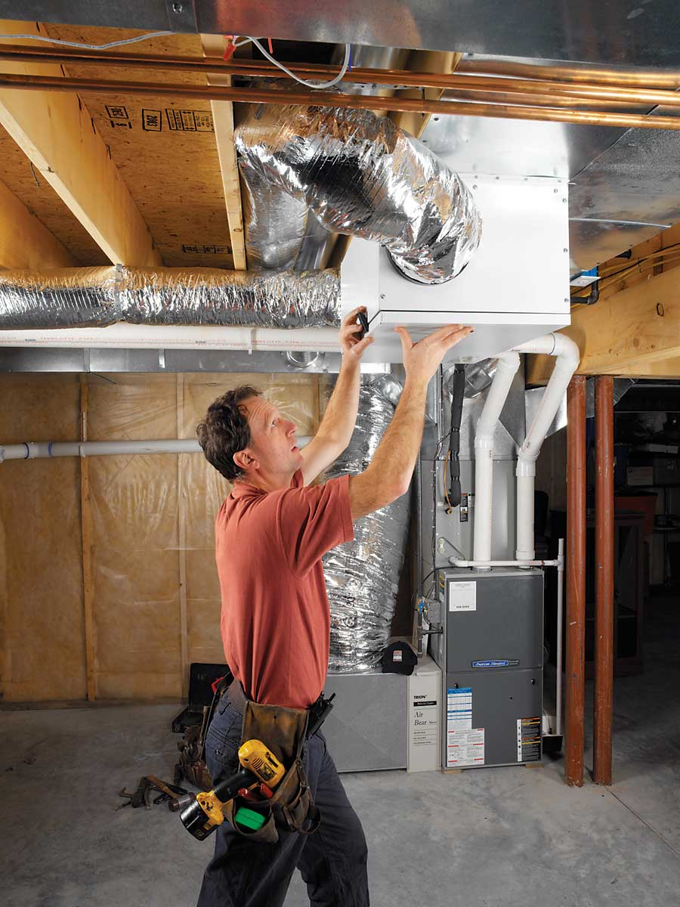

RENEWAIRE VENTILATION
Installing an energy-recovery ventilator is a job for a professional, but if your home has a central heating and air conditioning system, installation will be less complicated.